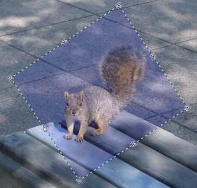

Move Tools
The following tools are covered by this topic:

-
Move Selected Pixels
This allows you to move, rotate, and scale a selection outline along with the pixels that are selected. When this tool is active, the blue highlight of the selection will not be drawn so that you can have better color accuracy.
-
Move Selection
This allows you to move, rotate, and scale a selection outline but not the pixels that are selected. This is useful for refining exactly which pixels you want to have selected. When this tool is active, a blue highlight will be added to the selected region so that you can have better accuracy for seeing which pixels are selected and which ones are not.
The first thing to make sure of before selecting one of these tools is that you have a selection active. Refer to the Selection Tools topic for more information on creating and editing these. Every move, resize, and rotate that you perform on a selection is added to the History Window.
When you switch to a move tool, several handles, or nubs, will appear on the edges and corners of the selection, like so:

When either of these tools is active, you may perform any of the following three actions to get the results you want. Each action may be performed multiple times, and you may mix and match them to get the right effect. Notice that in each example, when the Move Selection tool is used, the pixels that were selected are not affected.
Note: When you move pixels around on the background layer, the checkerboard pattern that is left behind is an indication that the region is transparent. The pattern is not actually part of the image.
Move
Drag with the left mouse button anywhere except on a nub to move the selection.
Move Selected Pixels Move Selection 

Resize
Move the mouse on top of one of the nubs and the mouse cursor will change to a hand cursor. Click and drag to resize the selection. If you are moving one of the nubs on the corner of the image, you may hold down Shift to maintain the selection's original aspect ratio (its proportions).
Move Selected Pixels Move Selection 
Rotate
Drag anywhere with the right mouse button to rotate the selection. While you rotate the selection, an indicator in the center of the selection will be drawn to indicate the center of rotation, and the current angle. It looks like a circle with a line drawn through it. Note that the angle of rotation is also displayed in the Status Bar.
While rotating, you may constrain the angle of rotation to a multiple of 15 degrees by holding down the Shift key.
Move Selected Pixels Move Selection 

Copyright © 2007
Rick Brewster, Tom Jackson, and past contributors. Portions Copyright
© 2007 Microsoft Corporation. All Rights
Reserved.